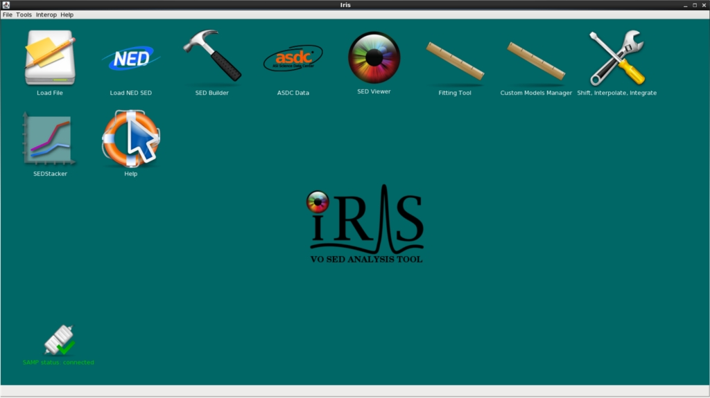

Quickstart | Download and Install Iris | Run Iris | Run Smoke Test | For C-Shell Users
Iris 2.1 Beta: released May 2015 This version of Iris is our beta release. Please see the latest Release Notes for details on the new features, bug fixes, and currently known bugs and limitations. If you find any bugs or have suggestions, please contact us at the CXC HelpDesk with the tag “Iris.”
The Iris software package is available for download through Anaconda. Iris is supported on Linux and Macintosh OS X 10.6 - 10.9 computer platforms running Java version 1.6 or higher.
If you are running Mac OS X 10.5 with Java 1.5, please follow the special installation instructions available here.
Iris will not run on a system which does not have at least Java SE 6 (developer version 1.6), preferably Oracle JRE, though special installation instructions are available for the Mac OS X 10.5 platform running Java 1.5.
To check your current Java version, type java -version into a terminal window:
unix% java -version java version "1.6.0_26" Java(TM) SE Runtime Environment (build 1.6.0_26-b03) Java HotSpot(TM) Server VM (build 20.1-b02, mixed mode)
Free disk space:
The Specview and Sherpa applications which comprise Iris run simultaneously and communicate with each other via a SAMP hub.
Known issues with installing and starting Iris are listed on the Troubleshooting page.
These instructions tell you how to download and install Iris quickly. For more details, tips-and-tricks and some troubleshooting, read the full direction starting in Detailed Download Directions.
These directions assume you are running in a BASH shell. If you are running a C-shell (csh, tcsh), then start a BASH shell:
$ /bin/bash # for C-shell users ONLY
If you do not have Anaconda, download Miniconda (a minimal version of Anaconda) for your platform. Otherwise, skip to step 2.
Install Miniconda. Installing Miniconda in batch mode assumes the user agrees with the end user lcense agreement found here.
$ bash Miniconda-latest-Linux-x86_64.sh -b -p $HOME/miniconda $ export PATH=$PATH:$HOME/miniconda/bin
Add $ export PATH=$PATH:$HOME/miniconda/bin to your $HOME/.bashrc or $HOME/.bash_profile so that you can run Anaconda commands from your terminal at any time. Otherwise, you will need to run this line everytime you run Iris. For example:
$ emacs ~/.bashrc export PATH=$PATH:$HOME/miniconda/bin
Add the CXC and Sherpa conda repositories to your Anaconda configuration:
$ conda config --add channels https://conda.anaconda.org/cxc $ conda config --add channels https://conda.anaconda.org/sherpa
Install Iris. This will create a environment specific to Iris. Say yes (enter “y”) when the download script asks you to install the packages. $ conda create -n iris iris=2.1
Start Iris. Activate the Iris environment first. Then, you can run Iris as you would for previous versions.
$ source activate iris $ iris
IMPORTANT: If you have set “iris” as an alias in your $HOME/.bashrc or $HOME/.bash_profile to run an older version of Iris, please rename the old alias to something else (for example, “iris201” for Iris v2.0.1).
Run the Iris smoke tests to confirm that Iris was installed successfully:
$ iris smoketest
When you’re finished using Iris, you can restore the original environment:
$ source deactivate
For C-shell users: If you wish to run Iris from a C-shell, see the extra steps needed in For C-Shell Users.
| [Back to Table of Contents] |
Iris is supported on Mac OS X 10.6-10.9 64-bit machines and Linux systems.
These directions assume you are running in a BASH shell. If you are running a C-shell (csh, tcsh), then start a BASH shell:
$ /bin/bash # for C-shell users ONLY
Iris is now distributed through Anaconda, a Python distribution and package manager. If you do not have Anaconda, download Miniconda (a minimal version of Anaconda) for your platform. Otherwise, skip to step 2.
Anaconda lets you install and manage Python packages without root or administrator permissions. It is also useful for experimenting with different Python versions in isolated environments without fiddling with your system Python distribution. Beyond its use for installing Iris, Anaconda can be a helpful tool to have for other projects.
Install Miniconda. Installing Miniconda in batch mode assumes the user agrees with the end user license agreement found here.
$ bash Miniconda-latest-Linux-x86_64.sh -b -p $HOME/miniconda $ export PATH=$PATH:$HOME/miniconda/bin
Add $ export PATH=$PATH:$HOME/miniconda/bin to your $HOME/.bashrc or $HOME/.bash_profile so that you can run Anaconda commands from your terminal at any time. Otherwise, you will need to run this line everytime you run Iris. For example, if you’ve already appended Miniconda to your PATH:
$ echo "export PATH=$PATH" >> ~/.bashrc
Add the CXC and Sherpa conda repositories to your Anaconda configuration:
$ conda config --add channels https://conda.anaconda.org/cxc $ conda config --add channels https://conda.anaconda.org/sherpa
Install Iris. This will create a environment specific to Iris.
$ conda create -n iris iris=2.1
You will see something like the following output below. Say yes (enter “y”) when the download script asks you to install the packages.
Fetching package metadata: ..........
Solving package specifications: ...............
Package plan for installation in environment /home/username/miniconda/envs/iris:
The following packages will be downloaded:
package | build
---------------------------|-----------------
iris-2.1 | 3 24.4 MB
numpy-1.8.2 | py27_0 7.3 MB
pyfits-3.3.0 | np18py27_1 1.9 MB
python-2.7.9 | 2 13.4 MB
sampy-1.2.1 | py27_1 57 KB
scipy-0.14.0 | np18py27_0 29.6 MB
setuptools-15.2 | py27_0 435 KB
astlib-0.7.0 | np18py27_2 1.1 MB
pip-6.1.1 | py27_0 1.4 MB
sherpa-4.7 | np18py27_1 6.2 MB
sedstacker-0.1.0_iris | np18py27_3 4.7 MB
sherpa-samp-2.1 | np18py27_3 84 KB
------------------------------------------------------------
Total: 90.5 MB
The following NEW packages will be INSTALLED:
astlib: 0.7.0-np18py27_2
iris: 2.1-3
numpy: 1.8.2-py27_0
openssl: 1.0.1k-1
pip: 6.1.1-py27_0
pyfits: 3.3.0-np18py27_1
python: 2.7.9-2
readline: 6.2-2
sampy: 1.2.1-py27_1
scipy: 0.14.0-np18py27_0
sedstacker: 0.1.0_iris-np18py27_3
setuptools: 15.2-py27_0
sherpa: 4.7-np18py27_1
sherpa-samp: 2.1-np18py27_3
sqlite: 3.8.4.1-1
system: 5.8-2
tk: 8.5.18-0
zlib: 1.2.8-0
The following NEW packages will be INSTALLED:
astlib: 0.7.0-np18py27_1
iris: 2.1-3
numpy: 1.8.2-py27_0
openssl: 1.0.1k-1
pip: 6.1.1-py27_0
pyfits: 3.3.0-np18py27_1
python: 2.7.9-1
readline: 6.2-2
sampy: 1.2.1-py27_1
scipy: 0.14.0-np18py27_0
sedstacker: 0.1.0_iris-np18py27_3
setuptools: 15.2-py27_0
sherpa: 4.7-np18py27_1
sherpa-samp: 2.1-np18py27_3
sqlite: 3.8.4.1-1
tk: 8.5.18-0
zlib: 1.2.8-0
Proceed ([y]/n)? y
Fetching packages ...
iris-2.1-3.tar 100% |################################| Time: 0:00:03 6.62 MB/s
numpy-1.8.2-py 100% |################################| Time: 0:00:02 3.08 MB/s
pyfits-3.3.0-n 100% |################################| Time: 0:00:00 6.01 MB/s
python-2.7.9-2 100% |################################| Time: 0:00:35 390.66 kB/s
sampy-1.2.1-py 100% |################################| Time: 0:00:00 4.51 MB/s
scipy-0.14.0-n 100% |################################| Time: 0:00:30 1.03 MB/s
setuptools-15. 100% |################################| Time: 0:00:00 1.67 MB/s
astlib-0.7.0-n 100% |################################| Time: 0:00:01 695.91 kB/s
pip-6.1.1-py27 100% |################################| Time: 0:00:01 826.33 kB/s
sherpa-4.7-np1 100% |################################| Time: 0:00:06 992.10 kB/s
sedstacker-0.1 100% |################################| Time: 0:00:05 869.50 kB/s
sherpa-samp-2. 100% |################################| Time: 0:00:00 833.10 kB/s
Extracting packages ...
[ COMPLETE ]|#######################################################################################################| 100%
Linking packages ...
[ COMPLETE ]|#######################################################################################################| 100%
#
# To activate this environment, use:
# $ source activate iris
#
# To deactivate this environment, use:
# $ source deactivate
#
At this point, Iris is fully installed on your system and ready to be used.
From the command line, activate the Iris environment. Then, you can run Iris from any directory with the simple command iris.
$ source activate iris $ iris
IMPORTANT: If you have set “iris” as an alias in your $HOME/.bashrc or $HOME/.bash_profile to run an older version of Iris, please rename the old alias to something else (for example, “iris201” for Iris v2.0.1).
-><- ->The Iris Desktop<-
When you close Iris, you can restore your original environment by entering the following into the command line:
$ source deactivate
A “smoketest” file is included in the Iris software package to help you verify that Iris has been installed correctly and is working properly on your computer platform.
To run the smoke test, start the Iris environment and run iris smoketest:
$ source activate iris # if not already in the environment $ iris smoketest
The terminal output will provide a record of the test and indicate a successful termination or failed attempt. For more details on the Iris smoke test, see the Iris Smoke Test page.
When you’re finished using Iris, you can restore the original environment:
$ source deactivate
If you wish to run Iris from a C-shell, add the following lines to your $HOME/.cshrc:
setenv PATH ${PATH}:<path-to>/miniconda/bin # append the path to miniconda/bin to $PATH
setenv OLDPATH ${PATH}
alias source_activate_iris "setenv PATH <path-to>/miniconda/envs/iris/bin:${PATH}"
alias source_deactivate "setenv PATH $OLDPATH"
where <path-to> is the full path to your Miniconda or Anaconda directory. (Note: If you’re using Anaconda, replace “miniconda” with “anaconda”)
After sourcing your $HOME/.cshrc, you can start Iris with
% source_activate_iris % iris
Once you’ve closed Iris, you can restore the original environment with
% source_deactivate
If you want to, you can change the name of “source_activate_iris” and “source_deactivate” to whatever you’d like, e.g., “activate_iris” and “deactivate”, by editing the aliases listed in your $HOME/.cshrc.
If you choose to setup these aliases, whenever you see the following in the Iris documentation:
% /bin/bash # C-shell users ONLY $ source activate iris
you can skip the /bin/bash and replace source activate iris with source_activate_iris (or whatever your alias is).
| [Back to Table of Contents] |